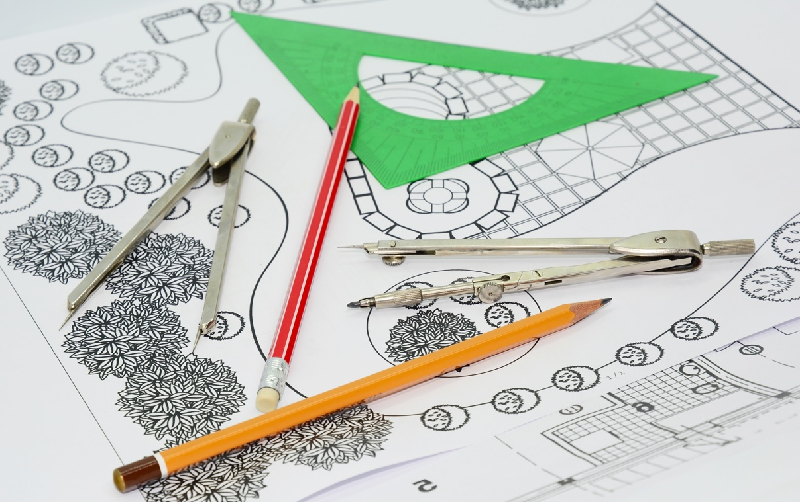

Yard Maintenance
Hire us to maintain your yard. We do mowing, pruning, weeding and mulching. We believe in treating every plant in the landscape individually. Plants have different growth habits and needs to ensure proper growth and blooming. Pruning should be done at different times of the year for different plants. You will never see us take hedge clippers and lolly pop an entire yard.
Landscape Design
We can design a yard to suit your taste whether you have a new construction or want to revitalize established landscaping. Let us show you how to make your yard a natural extension of your home and lifestyle. We emphasize the use of native and low maintenance plants. Let us design and install a drip irrigation system. Reduce wasted water and stop wasting time watering.